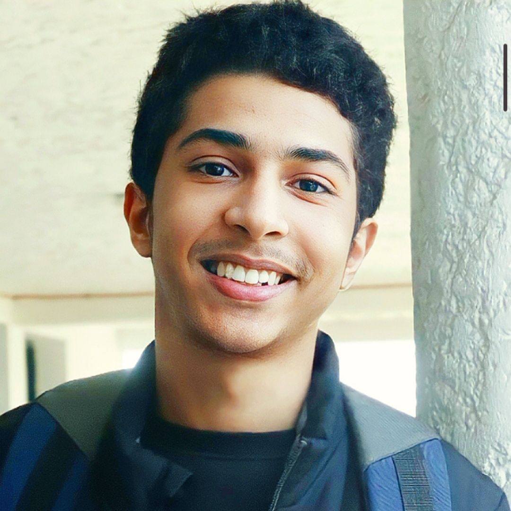

Imad Roudane

Summary
I am a Lab Technician, and computer science student, I took CS50 and now I'm learning web developments from Dr.Angela Yu
Education
- Bachelor's degree in Biology abd Physiology - University Hassan 2 Casablanca
- National Student Entrepreneur Status - Pole Saleem
Work experience
Lab Technician within the Biology Center of Hospitals
september 2024 - Present
- Tube Management depends on the biological assessment
- Analyze and Diagnose parameters
- Quality Control
Skills
- Social and Public Speaker
- Energetic and adapt to different environments
- Analysis and forecasting
Awards and Certifications
- Computer Science 50 (David Malan - Harvard University)
- Epidermolysis Bullosa - DEBRA International congress